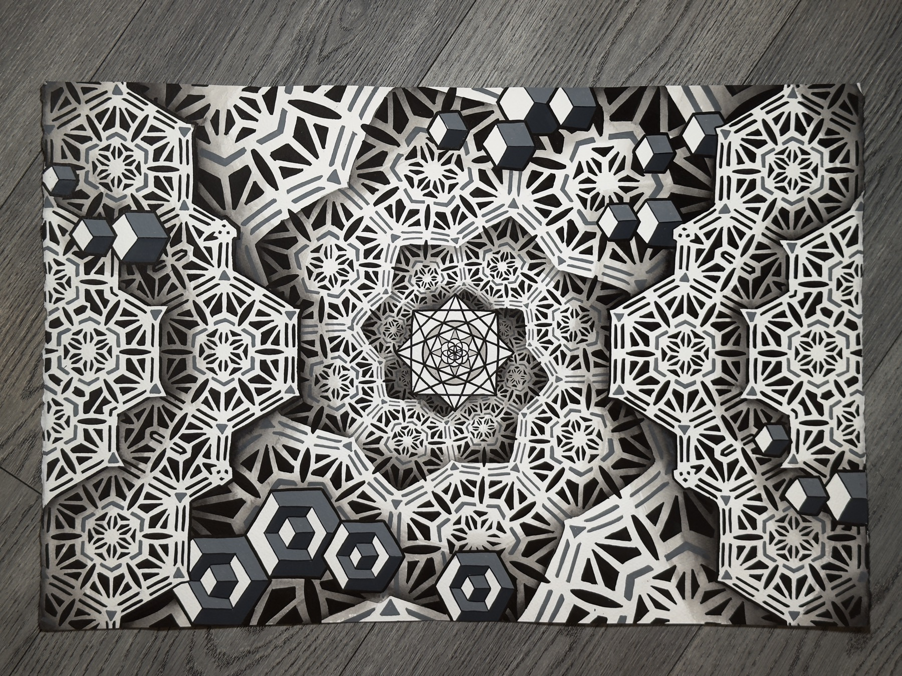
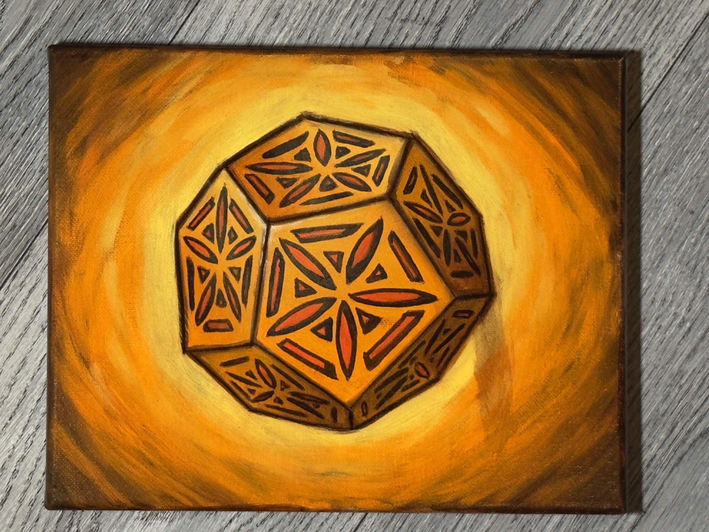
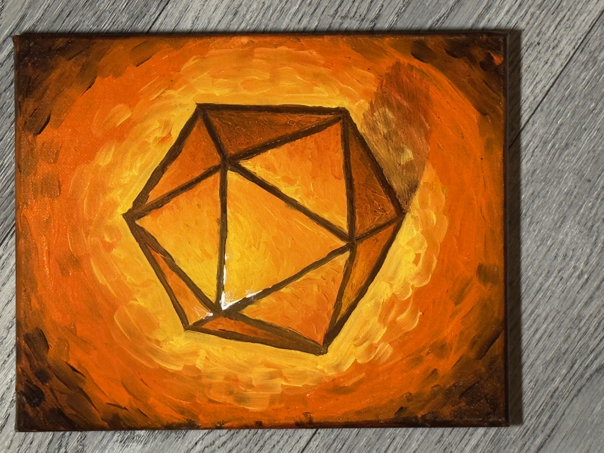
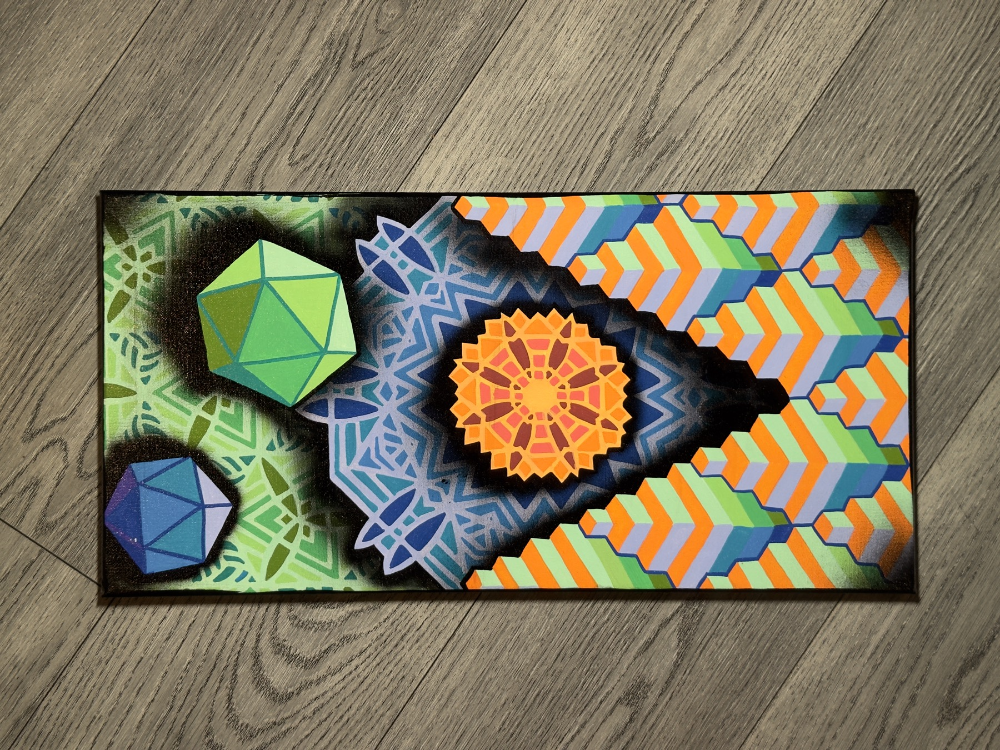
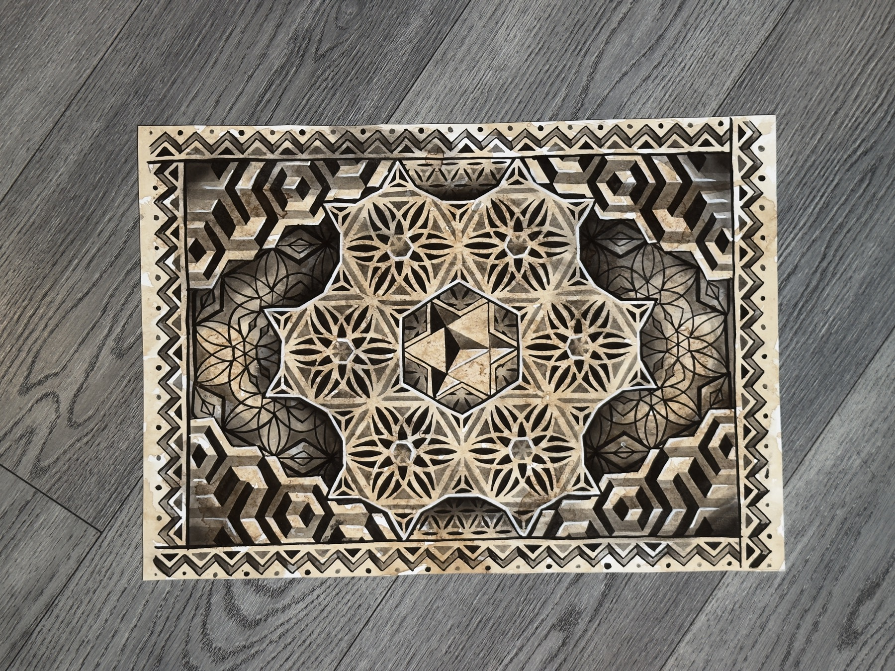
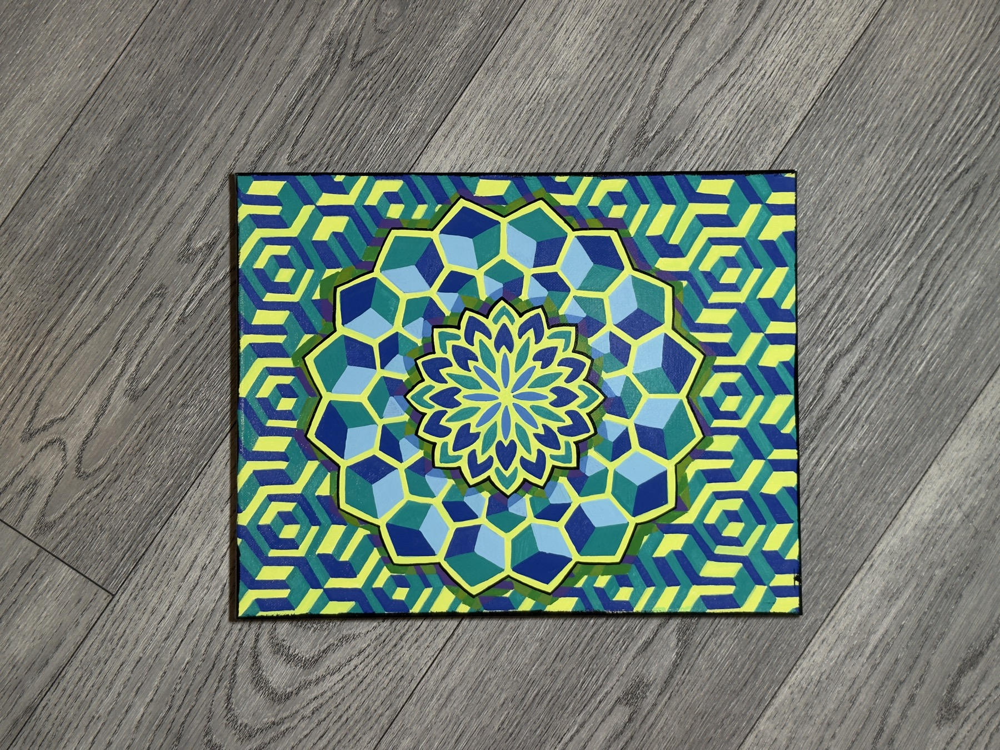
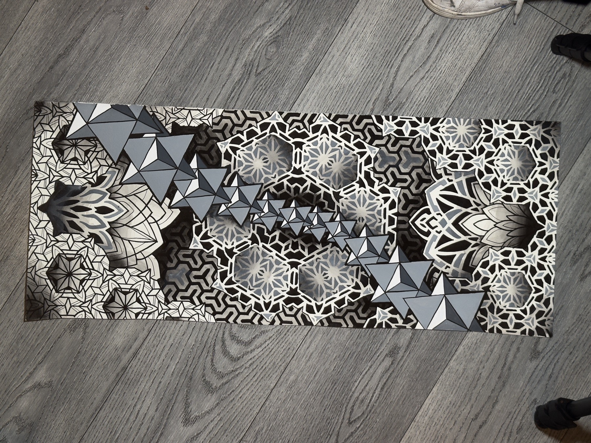

The same geometry I've been tattooing for over a decade now on canvas. More to come in 2026.







More work being added throughout 2026. These are early pieces the transition from skin to canvas is still in progress.